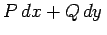

Inhalt Index DeskTop Bronstein

 Integralrechnung Kurvenintegrale Unabhängigkeit des Kurvenintegrals vom Integrationsweg
Integralrechnung Kurvenintegrale Unabhängigkeit des Kurvenintegrals vom Integrationsweg


Das Umlaufintegral über eine ebene geschlossene Kurve, d.h. das Kurvenintegral von , ist gleich Null, wenn die Bedingung (8.127) erfüllt ist und wenn innerhalb der geschlossenen Kurve keine Punkte liegen, in denen eine der Funktionen oder unstetig oder nicht definiert ist.